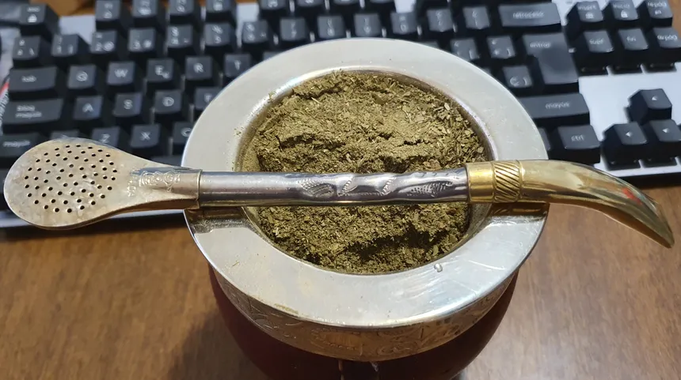

Mate

Description
I couldn't left out the most popular drink of Argentina, Mate. Mate is widely consumed in south latin-america, but specially in Argentina, where is estimated that every argentinian drinks 100L per year.
Mate is really easy to make, and if you want to experiment adding herbs or fruit's skin you absolutely can! I recommend adding either orange skins or mint leaves.
Ingredients
- Mate gourd or any small recipient
- Straw
- Yerba mate
- Sugar (Optional)
Steps
- Heat water on a kettle, turn it off before it boils (The recommended temperature is 70C to 80C, so 158F to 176F ).
- On the mate gourd, fill 2/3 with yerba, and pour a little bit of cold water, this step is just to hydrate the yerba
- 5 minutes later, lean the mate to one side, and blocking the opening of the straw with your thumb, use the other side of the straw to make a "mountain", and leave the straw on the empty space
- Now you can add sugar on the empty space if you want, because the first mate always has an strong flavour
- Pour the hot water
- Drink!(from the straw) you can eat some cookies with it or drink it alone. If you want to share it, and they are disgusted by the idea of drink it saliva (which I don't think you drink other peoples saliva anyway) you can clean the straw after you finish the mate with a paper towel.